Overland Track
Through Tasmania's alpine heart past Cradle Mountain and Mount Ossa to Lake St Clair.
65 km through Australia, ending at Lake St Clair. It starts at Ronny Creek. Your ordinary week counts toward all of it: at 5,000 steps a day that's about 3 weeks, with no flights and no leave. Below are the 14 places you pass, each with its photograph and its story.
- 65km end to end
- 14landmarks
- 3 weeksat 5,000 steps a day
- Lake St Clairfinishes at
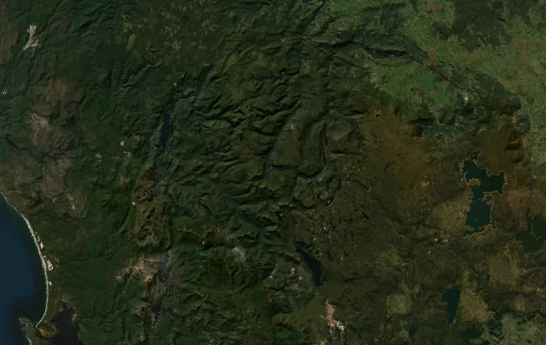
The landmarks of Overland Track
14 landmarks, in walking order. Each photograph is by the person credited beneath it, used as they licensed it.
-
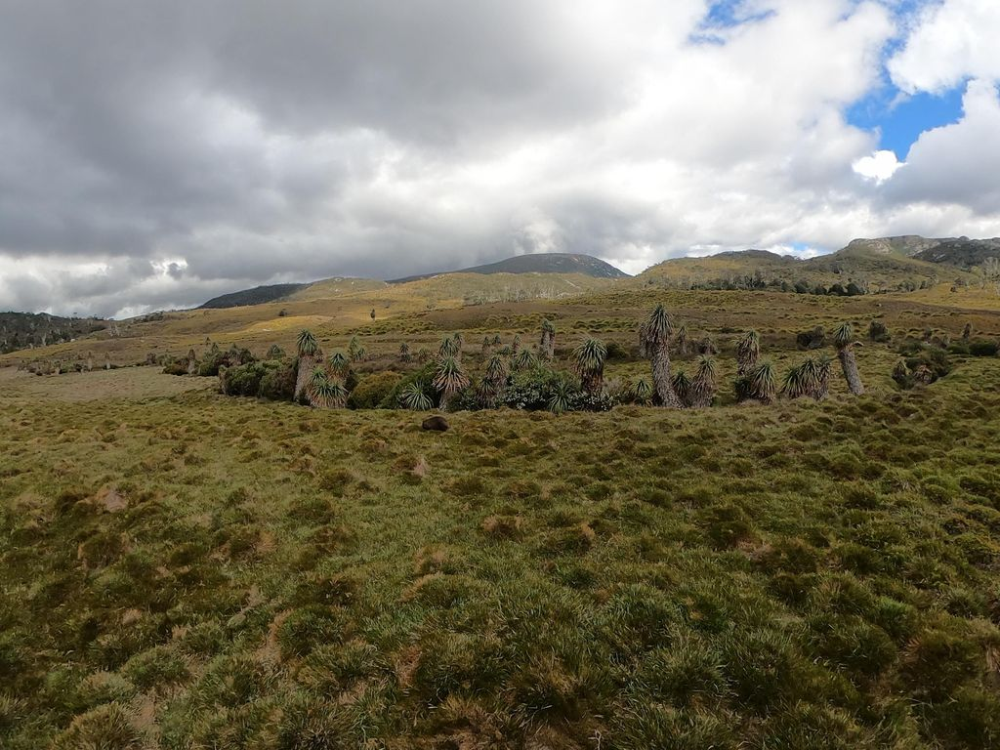
Photo: coreagc · Mapillary, CC BY-SA 4.0 Ronny Creek
Boardwalk winds out across the buttongrass of Ronny Creek, and wombats graze the tussock at dawn, unbothered by walkers. This is the northern start of the Overland Track, sixty-five kilometres south through the heart of Tasmania's Cradle Mountain–Lake St Clair National Park. Cradle Mountain's serrated crest rises ahead. The climb to Marions Lookout begins within the hour.
-
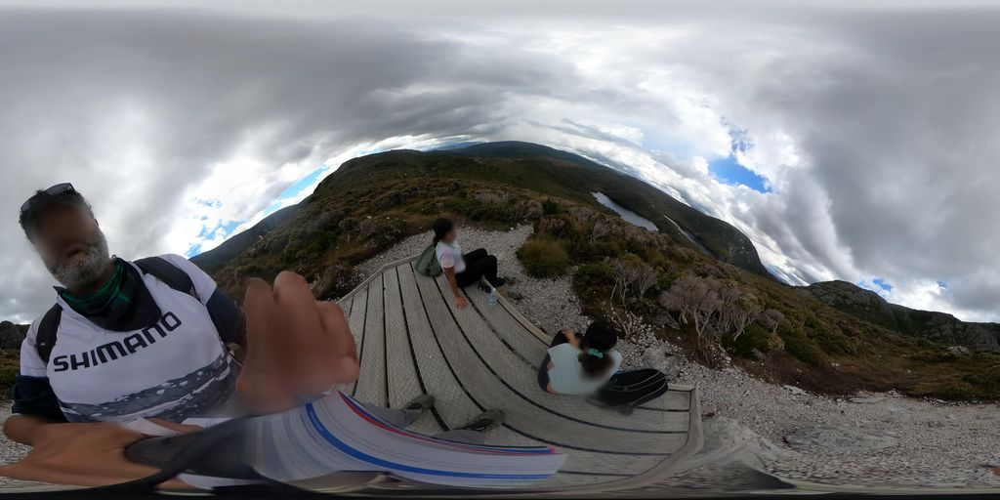
Photo: coreagc · Mapillary, CC BY-SA 4.0 Marions Lookout
The track climbs steeply, chained in its final pitch, to Marions Lookout at 1,250 metres. Behind and below, Dove Lake sits dark in its hollow beneath the dolerite towers of Cradle Mountain. Wind scours the exposed rock. This is the first great view of the walk, the whole Cradle cirque laid out and the plateau of the Central Highlands opening south.
-
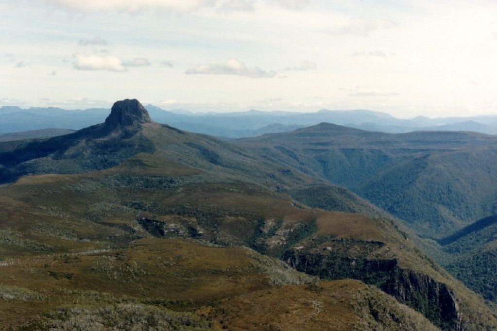
Photo: popple · Mapillary, CC BY-SA 4.0 Kitchen Hut
A small emergency hut stands alone on the open plateau below Cradle Mountain, its upper door reached by a ladder when snow buries the ground floor. Kitchen Hut marks the turn-off for the summit climb, a hard scramble over boulders to 1,545 metres. Alpine heath and pencil pine cover the tops. Weather here changes without warning, even in high summer.
-
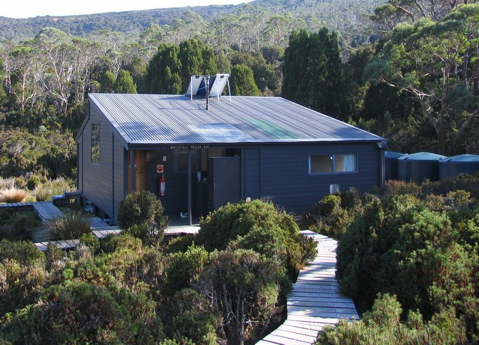
Photo: Ash_sydney - Wikimedia Commons, CC BY 3.0 Waterfall Valley Hut
The track descends off the exposed plateau into the shelter of Waterfall Valley, the hut tucked among pencil pines below the bulk of Barn Bluff. Cascades feed the creek nearby. After the open, wind-raked tops the valley feels sudden and calm. This is the first night's hut for most, a day's walking behind and the long highlands ahead.
-
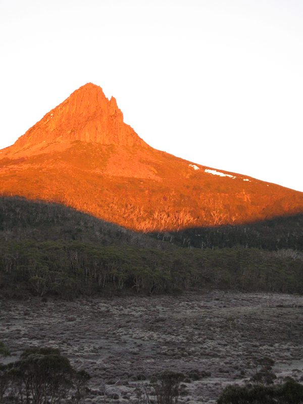
Photo: PelionClimber - Barn, CC BY-SA 4.0 Barn Bluff
Barn Bluff throws up a sheer dolerite prow to 1,559 metres, the second-highest peak in the state and a landmark for half the walk. A side track climbs its flank for those with the legs and the weather. Cushion plants grow in the exposed saddles. From the highlands it stands unmistakable, a dark tilted block against the sky.
-
Lake Windermere Hut
Lake Windermere lies still and cold among the pencil pines, and the hut sits a short way above its shore. Swimmers brave the water on warm afternoons. The track has crossed open moorland to reach here, wide skies and tarns in every hollow. Reflections of the pines hold on the surface at dusk. Ahead the land drops toward the Forth River.
-
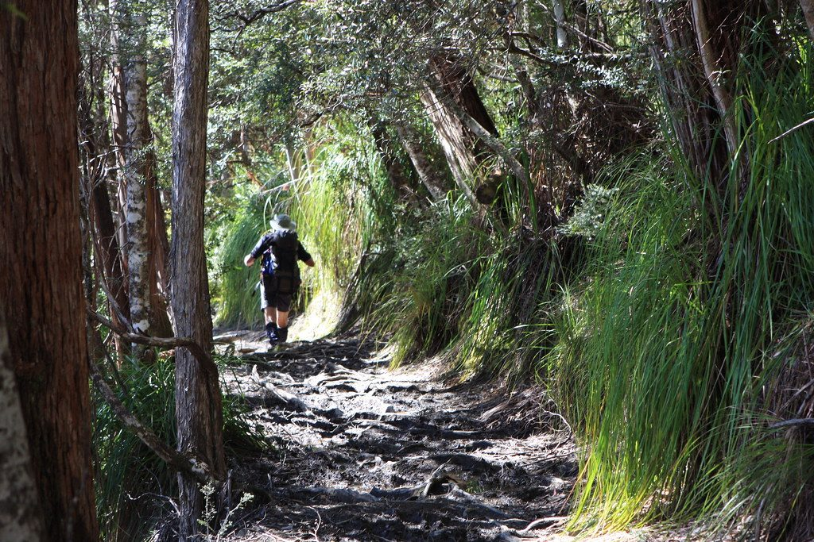
Photo: brewbooks - Flickr via Openverse, CC BY-SA 2.0 Frog Flats
The track reaches its lowest point at Frog Flats, where the Forth River winds through a boggy clearing at 730 metres. Tall myrtle beech and sassafras close overhead, the air suddenly damp and green after the open moor. Duckboard carries the path over the wettest ground. From here the long climb begins again, up toward the Pelion plains and the high peaks.
-
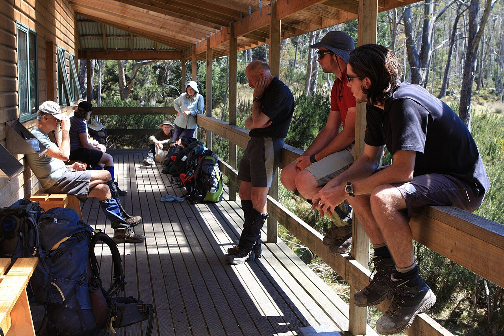
Photo: brewbooks from near Seattle, USA - Wikimedia Commons, CC BY-SA 2.0 Pelion Hut
The largest hut on the track, New Pelion stands on the edge of a wide plain, its broad verandah facing Mount Oakleigh, whose organ-pipe cliffs catch the evening light. Once this was mining country; a track still leads to old copper workings nearby. Platypus work the creek at dusk. The great central peaks — Ossa, Pelion East — ring the plain.
-
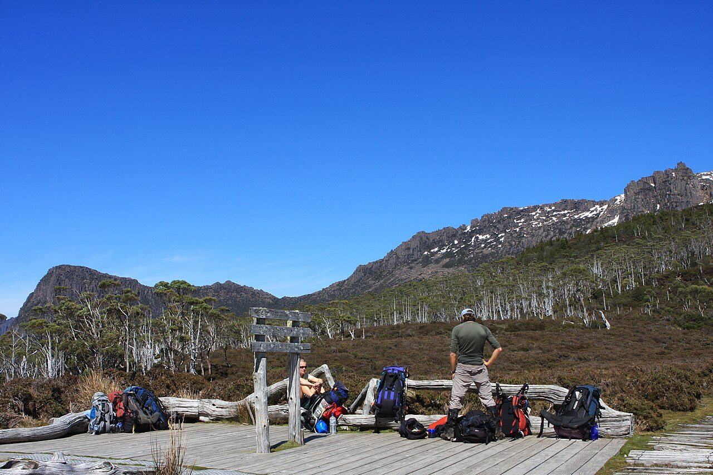
Photo: brewbooks from near Seattle, USA - Wikimedia Commons, CC BY-SA 2.0 Pelion Gap
The track climbs to Pelion Gap, a broad alpine saddle between Mount Ossa and Mount Pelion East, both reached by side tracks from here. Packs are often dropped at the junction for the summit climbs. Alpine herbfields and tarns fill the gap. Cloud pours through when the weather closes in. It is the hinge of the walk, the high crossing at its centre.
-
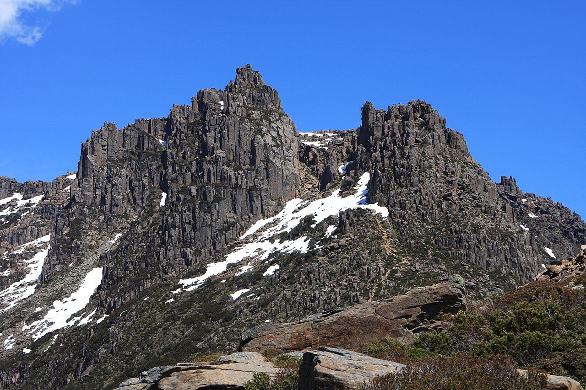
Photo: J Brew - Wikimedia Commons, CC BY-SA 2.0 Mount Ossa
Mount Ossa is the roof of Tasmania at 1,617 metres, a hard side climb from Pelion Gap over boulder fields and through a hanging garden of alpine flowers. From the top, on a clear day, half the island lies in view, ranges fading blue to every horizon. Snow can fall here in any month. It is the highest ground the Overland offers, earned by a steep detour.
-
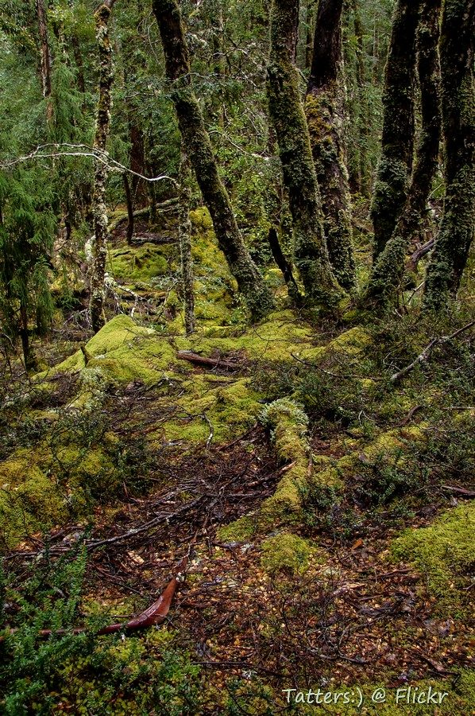
Photo: Tatters ✾ from Brisbane, Australia - Wikimedia Commons, CC BY-SA 2.0 Kia Ora Hut
Kia Ora Hut sits on a creek flat with Mount Ossa still filling the sky behind. The name is a Māori greeting, carried across the Tasman. After the high crossing of Pelion Gap the walking eases, dropping gently through alpine meadow toward the forest and the waterfalls of the Du Cane Range. Wallabies feed at the bush edge in the evening.
-
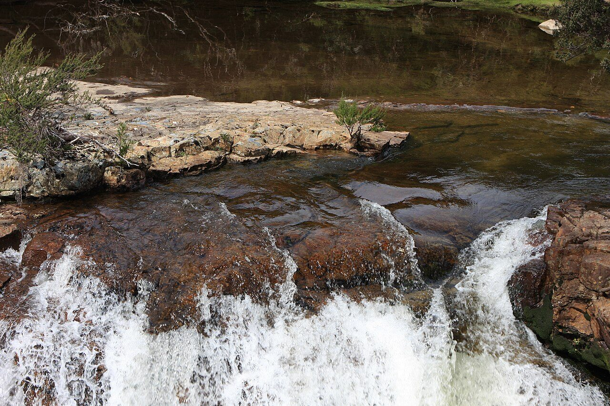
Photo: brewbooks from near Seattle, USA - Hartnett, CC BY-SA 2.0 Hartnett Falls
A side track drops to Hartnett Falls, where the Mersey River pours over a broad rock lip into a deep gorge, one of a run of great waterfalls along this stretch. D'Alton and Fergusson falls lie close by. Rainforest crowds the river, dripping and mossy. The main track climbs on toward Du Cane Gap, the last high crossing before the descent to the lake.
-
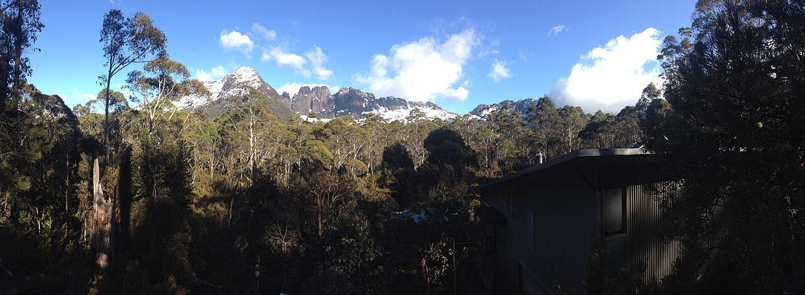
Photo: Krudller - Wikimedia Commons, CC BY-SA 4.0 Bert Nichols Hut
Bert Nichols Hut stands at Windy Ridge among tall eucalypts, one of the newest and finest on the track, its timber warm after the exposed tops. The high country is behind now, the peaks giving way to forest. Currawongs call in the canopy. From here the track runs mostly downhill through changing bush toward the head of Lake St Clair.
-
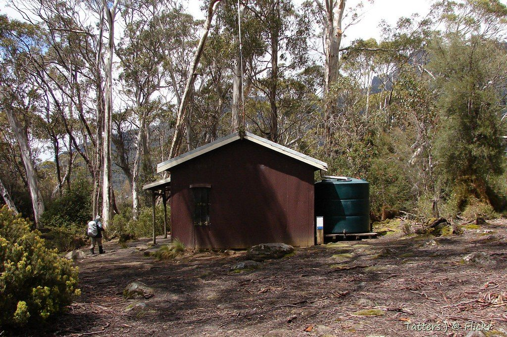
Photo: Tatters ✾ - Flickr via Openverse, CC BY-SA 2.0 Narcissus Hut
The track reaches Narcissus Hut on the flats at the northern head of Lake St Clair — Leeawuleena, 'sleeping water', to the Big River people, the deepest lake in Australia. Sixty-five kilometres of highland and forest end at its shore. A ferry crosses to Cynthia Bay, or a final day follows the lakeside. Behind lie Ossa, the gaps and the moors; ahead, still water and the way home.
Walking the Overland Track
Your watch is already counting these steps. Watch Walks spends them on the Overland Track, all 65 km of it, and hands you each landmark as you reach it. There's no route recording, no account and no ads. The Inca Trail is free; this one is a one-time purchase with no subscription.
Other trails in Oceania
- Te Araroa 3,000 km · New Zealand
- Bibbulmun Track 1,000 km · Australia
- Larapinta Trail 223 km · Australia (NT)
- Australian Alps Walking Track 655 km · Australia (VIC/NSW/ACT)
- Cape to Cape Track 123 km · Australia (WA)
- Routeburn Track 32 km · New Zealand